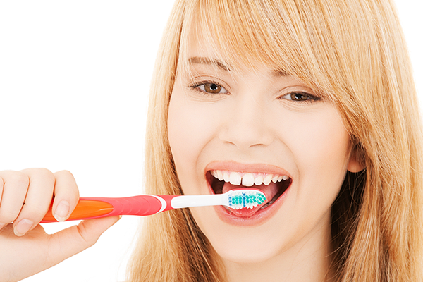

입냄새, 혀 닦는 습관
입 냄새 때문에 치과에서 정기적으로 스케일링을 받기도 하고, 잇몸치료를 받은 후에도 지속적으로 구취를 호소하는 경우가 있지만 알고 보면 정작 칫솔질 때 혀를 확실하게 닦지 않아 구취가 생기는 경우가 많습니다.
칫솔이나 혀 클리너로 닦는 게 좋을까?
칫솔은 단단한 치아를 닦게 나온 제품으로 혀를 닦으려면 더 부드러운 걸 써야 합니다. 일반 칫솔로 설태를 닦아 혀가 빨갛게 되는데 그걸 잘 닦은 것으로 착각하는 사람들이 있습니다. 그건 혀에 미세한 상처가 생겨 오히려 입 냄새를 더 나게 만듭니다.
적당한 칫솔이 없으면 차라리 손가락이 낫습니다. 세균들은 목구멍 가까이 혀 뒤쪽에 많이 포진해 있습니다. 칫솔이나 혀 클리너로 혀 뒤쪽을 닦으려면 구역질 때문에 쉽지 않습니다. 손가락에 치약을 조금 묻혀서 닦으면 혀 깊숙한 곳을 별 저항 없이 쉽게 닦을 수 있습니다.
물로 입 안을 헹궈도 될까?
자칫 불결해 보일 수는 있지만 어르신들이 식사 후 물을 입에 머금고 우물우물한 뒤 꿀꺽 마시는 경우가 있습니다. 우물우물해서 뱉으면 목구멍 가까이 쌓인 설태는 씻겨나가지 않습니다. 목구멍으로 삼켜야 혀 안쪽과 목젖 주변 세균이 씻겨 내려갑니다. 물총처럼 물줄기가 나오는 가정용 보조 구강관리기기를 사용하는 것도 괜찮습니다.